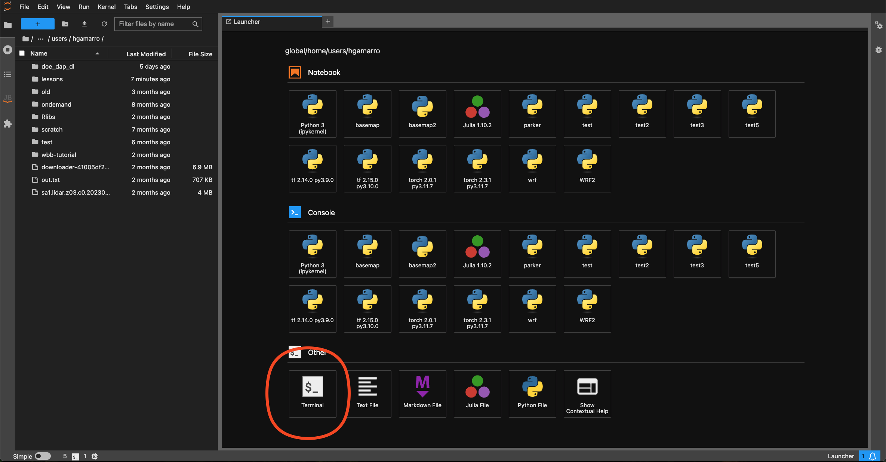
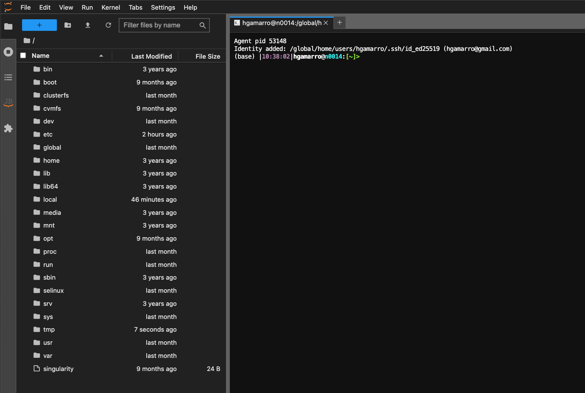
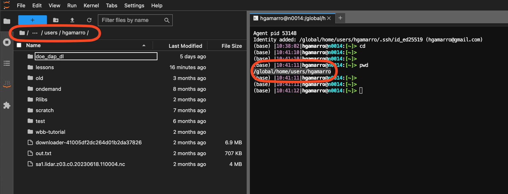
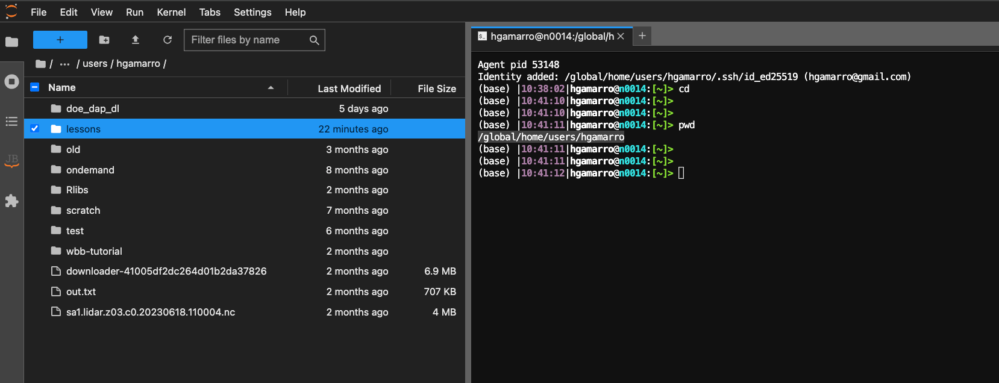
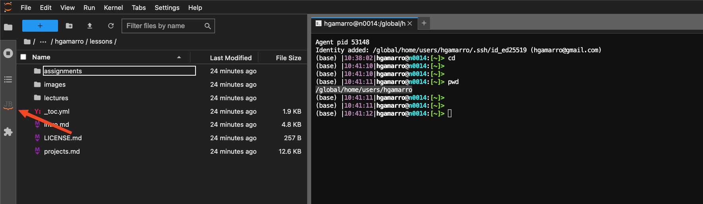
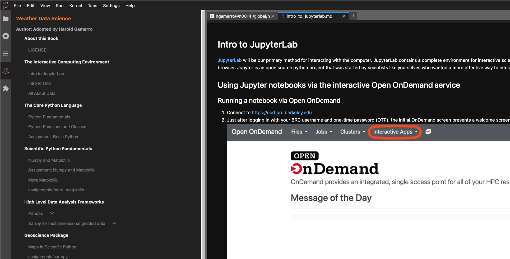
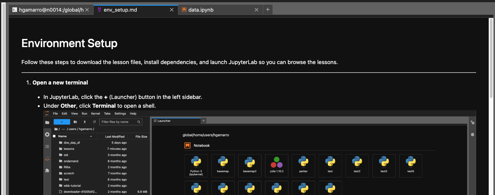
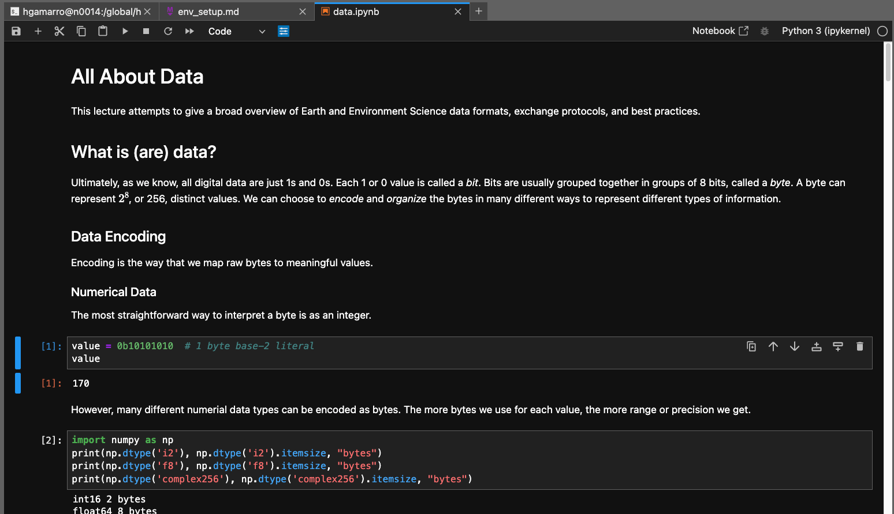

Environment Setup
Environment Setup#
Follow these steps to download the lesson files, install dependencies, and launch JupyterLab so you can browse the lessons.
Open a new terminal
In JupyterLab, click the + (Launcher) button in the left sidebar.
Under Other, click Terminal to open a shell.  
Note: The terminal often starts at the server’s root (
/). You need to move into your working folder and tell JupyterLab where to look, in the new terminal window paste the following:cd # change into your main working directory pwd # print the full path, e.g. /global/home/users/hgamarro
In JupyterLab’s top menu, go to File → Open From Path, then paste the output of
pwd. This will point your File Browser at the correct directory. 
Download the lessons repository
In the new terminal window paste the following
cd
git clone https://github.com/hgamarro/wrf-docs.git
mv wrf-docs/src/ lessons
rm -rf wrf-docs
rm lessons/LICENSE.md lessons/eeds-logo.png
Install the JupyterLab notebook-viewer extension
jupyter labextension install jupyter-notebook-lab-extension
This extension adds a Table of Contents panel for any folder of notebooks. Once it’s installed:
In the File Browser, navigate into the
lessons/folder.Open the Table of Contents side-panel (click the “JB” icon in the left sidebar).
Click any lesson title in the Table of Contents to jump to that notebook.   
Note:
If the lesson you open is a Markdown file (
.md), you’ll probably need to use the Terminal for the lessonIf the lesson is a Notebook (
.ipynb), you can open and interact with it directly in JupyterLab.
 